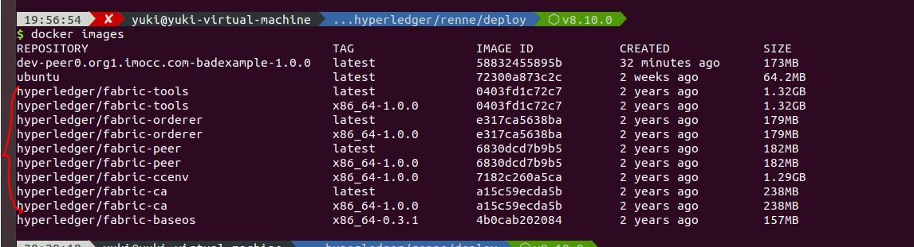

之前搞了好多天的实验，接着又学了一下别的杂七杂八的东西，今天总算能继续搭建fabric网络。之后如果可以的话，也写一下上次实验相关的东西吧。
超级账本，它改了之前不少ERC20 token需要另外的语言来进行编译的缺点，毕竟这样让开发者需要学习一门垃圾语言去编写应用是不太好的。而由于区块链中，需要保证状态机的一致性，就是指状态机起始状态相同、状态转移相同，就一定能得到一致的结果。支持ERC20 TOKEN的区块链可以使用evm来保证起始状态和转移状态的相同，而超级账本使用的是docker容器在一定范围内保证链码的转移相同。
这次搭建超级账本的过程真的学了不少东西，包括各种docker和docker-compose的各种花式操作。想了一下刚刚做的实验，也是用了docker的一些简单特性来搞的，要是重新搞一次或许会用docker-compose和k8s来干吧，虽然我了解还是很少。这半年真感觉自己知识量太少了，很多应该懂的知识还是不会，需要加倍努力。
闲话休提，言归正传。
镜像下载

我这里使用的全部都是release-1.0版本的镜像，然后把tag偷偷改成latest来运行的。。。毕竟1.0的教程比较完善嘛。
1 | docker pull hyperledger/fabric-ca:x86_64-1.0.0 |
编写crypto-config.yaml和configtx.yaml配置文件以及docker-compose文件
crypto-config.yaml文件是用于生成MSP证书的，MSP证书主要描述了排序节点和peer节点的组织关系。而configtx.yaml主要通过刚刚生成的MSP证书生成配置交易的，包括系统链和业务链的配置交易。配置交易规定了排序节点的共识算法、从属组织和peer节点的从属组织、主节点端口等。
我直接用了慕课网提供的配置文件：
生成MSP证书、创世区块和配置交易
1 | #生成MSP证书 |
创建通道
在使用docker-compose启动网络后，所有的操作都需要通过提交交易的方式来执行。而提交交易这个操作是在Peer节点上执行的，因此需要在docker-compose文件里定义一个组织和节点做cli，用于提交新交易。刚刚生成的那些在系统链创建区块以及在业务链执行链码服务，都可以通过刚刚的peer节点执行。
刚刚我们只是部署的网络，让各各不同的docker之间相互连接，启动了整个平台。但是启动平台之后仍未能执行链码操作，因为链码需要在通道中进行。因此我们需要登录到cli里面创建通道。
1 | docker exec -it cli bash |
链码执行
刚刚已经成功创建了通道，之后将智能合约安装并实例化就可以了。我们所有的业务逻辑都使用链码实现，这里将慕课网上的badexample部署到网络上。部署链码用到了安装和新建的操作，安装指的是复制文件、新建指的是执行新建的方法。
1 | # 安装链码 |
每次执行链码查询时都出现了不同的随机数，说明链码执行成功了。为什么这里使用了badexample形容这种链码呢？主要时因为链码在编写的时候使用了不稳定的外部依赖（随机数），使得即使初始状态一样，而状态转移不一样，得到的结果也会是不一样的。如果使用request之类的函数也会出现这样的问题，毕竟有的地方可能请求不了某个资源。